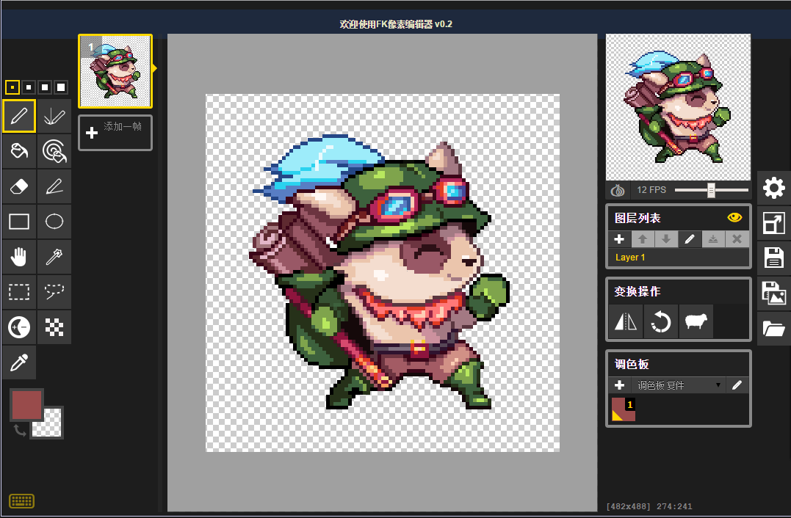

首页
开发日志
博客日志
游戏与代码
遗失之岛
H5小游戏
代码与工具
其他
关于我们
联系我们
友情链接
(c) FreeKnight
在线像素编辑器
功能介绍
可以 在线 进行像素绘图，无需下载到本地
支持 笔刷，橡皮，选区，取色，油漆桶，预览器 等常见工具
为像素绘图提供了额外的 虚抖笔刷，颜色更变工具，镜像笔刷，亮暗调节 等便捷工具
提供自定义快捷键，默认配置与Photoshop相同，提高开发速度
支持 撤销，重复 操作，支持复制，粘贴，剪切操作
支持多帧和多图层，可以方便的进行像素动画开发
支持自定义调色板，并提供默认调色板以便捷开发
可以生成png, gif以及zip格式文件
项目工程可以被保存 (类似psd格式文件) 在本地硬盘，也可以保存在浏览器缓存，下次进入网页自动加载工程，并具备自动备份功能
可以加载编辑其他png, gif, jpg, bmp,以及项目工程文件
Todo 列表
添加 叠加选区，减选选区 功能
调整 非激活图层透明度 的设置位置
添加三套默认调色板
添加基本人形模板
如果您觉得这个工具对您有帮助，或希望我更快完善，欢迎捐助我一杯Coffer~
捐 赠
